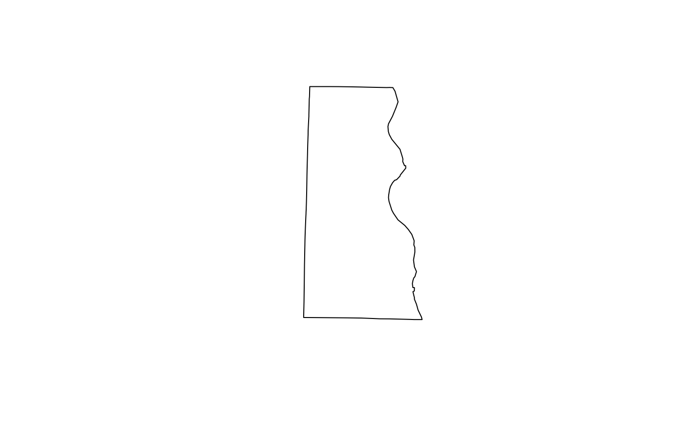

A polygonal observation window for Milwaukee County, Wisconsin, supplied as
an sf object. It is intended for use as the region argument
of fit_semihawkes with the point events in
milwaukee.
Format
An object of class sf with one row and the following
variables:
- region_name
Character. The value
"Milwaukee County, WI".- geometry
An
sfMULTIPOLYGONgeometry column in NAD83 / UTM zone 16N (EPSG:26916).
Details
The boundary was obtained from the U.S. Census Bureau 2024 cartographic
boundary data using
tigris::counties(state = "WI", cb = TRUE, year = 2024)
and transformed to NAD83 / UTM zone 16N (EPSG:26916).
Coordinates are measured in metres. Thus, milwaukee_county and
milwaukee have a common projected coordinate reference system that is
appropriate for distance-based spatial modelling.
Examples
data("milwaukee_county")
plot(sf::st_geometry(milwaukee_county))
